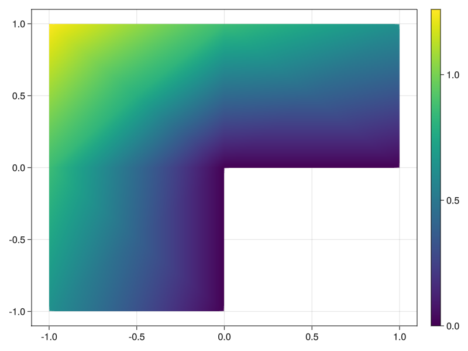

In this tutorial, we use the estimator obtained by the equilibrated flux to drive an adative mesh refinement (AMR) procedure. We consider the Laplace problem \[\begin{align} -\Delta u &= 0 &&\text{ in }\Omega\\ u &= g &&\text{ on }\partial\Omega \end{align}\] on an L-shaped domain \(\Omega = (-1,1)^2 \setminus [(0,1)\times(-1,0)]\). We load this domain from a json file.
using Gridap
model = DiscreteModelFromFile("Lshaped.json")
Ω = Triangulation(model)
using GridapMakie, GLMakie
fig = plot(Ω)
wireframe!(Ω, color=:black, linewidth=2);
figIn this case, we know the true solution \(u\) is given by the following formula in polar coordinates:
"Have to convert from -[π, π] to [0, 2π]"
function θ(x)
θt = atan(x[2], x[1])
(θt >= 0) * θt + (θt < 0) * (θt + 2 * π)
end
r(x) = sqrt(x[1]^2 + x[2]^2)
α = 2 / 3
u(x) = r(x)^α * sin(θ(x) * α)
u_fig, _ , plt = plot(Ω, u, colormap=:viridis)
Colorbar(u_fig[1,2], plt)
We define some helper functions for computing the L² norm in Gridap
L2_inner_product(f, g, dx) = ∫(f ⋅ g) * dx
L2_norm_squared(f, dx) = L2_inner_product(f, f, dx)
function L2_norm_squared(f, model, order)
degree = 2 * order + 2
Ω = Triangulation(model)
dx = Measure(Ω, degree)
L2_norm_squared(f, dx)
endNext, we define the Dörfler marking[1]
function dorfler_marking(η_arr)
if η_arr isa Gridap.Arrays.LazyArray
η_arr = EqFlux.smart_collect(η_arr)
end
θ = 0.3 # Marking parameter
η_tot = sum(η_arr)
sorted_inds = sortperm(η_arr, rev = true)
sorted = η_arr[sorted_inds]
η_partial = 0.0
i = 1
while η_partial <= θ * η_tot
η_partial += sorted[i]
i += 1
end
sorted_inds[1:i]
endAs a small example, we show the result of calling `dorfler_marking
This step just corresponds to the contents of the first Gridap.jl tutorial.
function solve_laplace(model, order, g)
Ω = Triangulation(model)
degree = 2 * order + 2
dx = Measure(Ω, degree)
a(u, v) = ∫(∇(v) ⊙ ∇(u)) * dx
b(v) = ∫(v * 0.0) * dx
reffe = ReferenceFE(lagrangian, Float64, order)
V0 = TestFESpace(model, reffe; conformity = :H1, dirichlet_tags = "boundary")
U = TrialFESpace(V0, g)
op = AffineFEOperator(a, b, U, V0)
uh = solve(op)
dofs = num_free_dofs(V0)
uh, dx, dofs
endThis function uses the EqFlux.jl package to obtain an error estimation on each cell of the mesh.
function estimate_laplace(uh, dx, model, order)
σ = build_equilibrated_flux(-∇(uh), x -> 0.0, model, order)
#σ = build_averaged_flux(∇(uh), model)
η² = L2_norm_squared(σ + ∇(uh), dx)
Ω = Triangulation(model)
getindex(η², Ω)
end
using Gridap.AdaptivityFinally, this function puts the previous functions together into the standard Solve -> Estimate -> Mark -> Refine loop of AFEM. The refinement step using newest vertex bisection can be selected using “nvb” with the keyword argument refinement_method. g is the function on the Dirichlet boundary.
function solve_estimate_mark_refine_laplace(model, tol, order; g)
η = Inf
estimators = Float64[]
errors = Float64[]
num_dofs = Float64[]
error_fields = CellField[]
while η > tol
# We extract the internal model from the refined model
if model isa AdaptedDiscreteModel
model = model.model
end
# SOLVE
uh, dx, dofs = solve_laplace(model, order, g)
push!(num_dofs, dofs)
# ESTIMATE
η_arr = estimate_laplace(uh, dx, model, order)
H1err² = L2_norm_squared(∇(u - uh), dx)
Ω = Triangulation(model)
error_field = CellField(sqrt.(getindex(H1err², Ω)), Ω)
push!(error_fields, error_field)
H1err = √sum(H1err²)
η = √(sum(η_arr))
push!(estimators, η)
push!(errors, H1err)
# MARK
cells_to_refine = dorfler_marking(η_arr)
# REFINE
model = refine(model, refinement_method = "nvb", cells_to_refine = cells_to_refine)
end
return error_fields, num_dofs, estimators, errors
endWe can change the polynomial order here as well as the tolerance for the estimator.
We pass the true solution as the Dirichlet function \(g\)
error_fields, num_dofs, estimators, errors = solve_estimate_mark_refine_laplace(model, tol, order, g = u)
fig = Figure()
axis = Axis(fig[1,1], xscale = log10, yscale = log10, title = "Order p=$order", xlabel = "DOFs")
lines!(axis, num_dofs, errors, label = "Error")
lines!(axis, num_dofs, estimators, label = "Estimator")
lines!(axis, num_dofs, num_dofs.^(-order / 2), label = "Optimal rate")
axislegend()
figWe now show that the AFEM refinement achieves the optimat rate of convergence of \(\mathrm{DOFs}^{-p/d} = \mathrm{DOFs}^{-p/2}\) in 2D.
Finally, we plot a .gif that shows sequence of meshes generated by the adaptive refinement procedure. The refinement is clearly concentrated to the re-entrant corner.
idx = Observable(1)
errors_plot = lift(idx) do idx
error_fields[idx].trian
end
fig, ax, plt = plot(errors_plot)
#display(fig)
wireframe!(errors_plot, color=:black, linewidth=2)
framerate = 5
idxs = 1:length(error_fields)
record(fig, "animation.gif", idxs; framerate=framerate, compression=0) do this_idx
idx[] = this_idx
end[1] Dörfler, W. A convergent adaptive algorithm for Poisson’s equation. SIAM Journal on Numerical Analysis 33, 3 (1996), 1106–1124
This page was generated using Literate.jl.